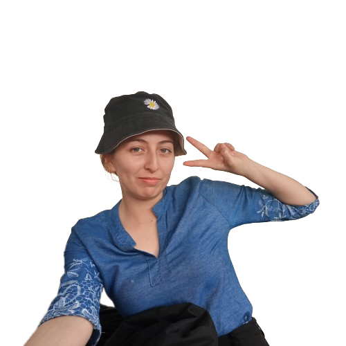
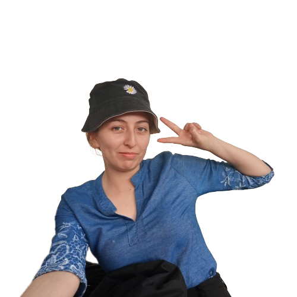
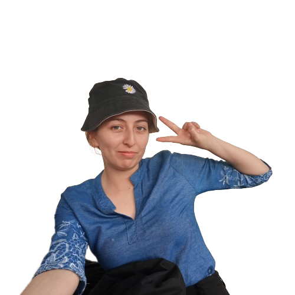

Hola soy Arianna
Este es mi portafolio para la materia desarrollo de aplicaciones web
Carrera de Ingeniería de Software

Este es mi portafolio para la materia desarrollo de aplicaciones web
Carrera de Ingeniería de Software

Soy Arianna Aspiazu, originaria de Mocache en la provincia de Los Ríos. Actualmente, estudio Ingeniería de Software y tengo 20 años.
Disfruto pasar tiempo en casa con mi familia, contemplando el atardecer en el campo.
En mis momentos libres, me gusta ver anime, series y películas. También realizo ejercicio físico de vez en cuando.
En mi carrera de Software, colaboré en la creación de una página web sobre la hidratación y alimentación correcta según las características del usuario.
Mediante este documento puede leer nuestro proyecto HydroHealth que realizamos en cuarto semestre.

Instagram: @misaelyasp

WhatsApp: 0996995564

Correo: aaspiazu8623@utm.edu.ec